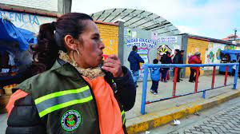
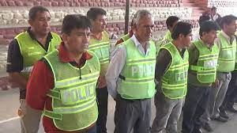

CLASES EN TIEMPOS DE PANDEMIA
Las clases se llevan a cabo dias por medio en la cual algunos cursos solo pasan 2 dias a la semana, cumplen con todos los reglamentos para no contraer la enfermedad, tanto como primaria y secundaria no disponen de recreo para no aglomerar gente, las clases en turno mañana es de 08:00 a 12:00, y el turno tarde de 13:00 a 18:00 pero este ultimo no se cumple del todo ya que hay veces que los alumnos tienen octavas y esto hace que salgan aun mas tarde. Las brigadas para la fumigacion de la enfermedad esta conformado por los padres y madres de familia que son representantes de cada curso y se coordinan los dias para desinfectar tanto a los porfesores como alumnos y cursos para una mejor comodidad y no tener riesgos.
 